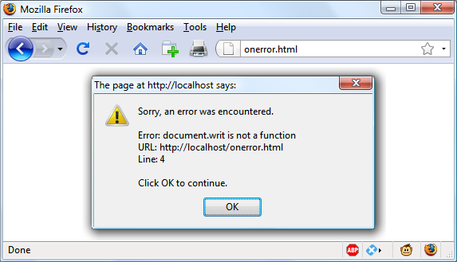

Expressions and Control Flow in JavaScript
In the previous chapter, I introduced the basics of JavaScript and the DOM. Now it’s
time to look at how to construct complex expressions in JavaScript and how to con‐
trol the program flow of your scripts by using conditional statements.
Expressions
JavaScript expressions are very similar to those in PHP. As you learned in
Chapter 4
,
an expression is a combination of values, variables, operators, and functions that
results in a value; the result can be a number, a string, or a Boolean value (which eval‐
uates to either
true
or
false
).
Example 14-1
shows some simple expressions. For each line, it prints out a letter
between
a
and
d
, followed by a colon and the result of the expressions. The
<br>
tag is
there to create a line break and separate the output into four lines (remember that
both
<br>
and
<br />
are acceptable in HTML5, so I chose to use the former style for
brevity).
Example 14-1. Four simple Boolean expressions
<script>
document.write("a: " + (42 > 3) + "<br>")
document.write("b: " + (91 < 4) + "<br>")
document.write("c: " + (8 == 2) + "<br>")
document.write("d: " + (4 < 17) + "<br>")
</script>
The output from this code is as follows:
a: true
b: false
c: false
d: true
Notice that both expressions
a:
and
d:
evaluate to
true
. But
b:
and
c:
evaluate to
false
. Unlike PHP (which would print the number
1
and nothing, respectively),
actual strings of
true
and
false
are displayed.
In JavaScript, when you are checking whether a value is
true
or
false
, all values eval‐
uate to
true
except the following, which evaluate to
false
: the string
false
itself,
0
,
–
0
, the empty string,
null
,
undefined
, and
NaN
(Not a Number, a computer engineer‐
ing concept for an illegal floating-point operation such as division by zero).
Note how I am referring to
true
and
false
in lowercase. This is because, unlike in
PHP, these values
must
be in lowercase in JavaScript. Therefore, only the first of the
two following statements will display, printing the lowercase word
true
, because the
second will cause a
'TRUE' is not defined
error:
if (1 == true) document.write('true') // True
if (1 == TRUE) document.write('TRUE') // Will cause an error
Remember that any code snippets you wish to type and try for
yourself in an HTML file need to be enclosed within
<script>
and
</script>
tags.
Literals and Variables
The simplest form of an expression is a
literal
, which means something that evaluates
to itself, such as the number
22
or the string
Press Enter
. An expression could also
be a variable, which evaluates to the value that has been assigned to it. They are both
types of expressions, because they return a value.
Example 14-2
shows three different literals and two variables, all of which return val‐
ues, albeit of different types.
Example 14-2. Five types of literals
<script>
myname = "Peter"
myage = 24
document.write("a: " + 42 + "<br>") // Numeric literal
document.write("b: " + "Hi" + "<br>") // String literal
document.write("c: " + true + "<br>") // Constant literal
document.write("d: " + myname + "<br>") // String variable
document.write("e: " + myage + "<br>") // Numeric variable
</script>
And, as you’d expect, you see a return value from all of these in the following output:
a: 42
b: Hi
c: true
d: Peter
e: 24
Operators let you create more-complex expressions that evaluate to useful results.
When you combine assignment or control-flow constructs with expressions, the
result is a
statement
.
Example 14-3
shows one of each. The first assigns the result of the expression
366 -
day_number
to the variable
days_to_new_year
, and the second outputs a friendly
message only if the expression
days_to_new_year < 30
evaluates to
true
.
Example 14-3. Two simple JavaScript statements
<script>
days_to_new_year = 366 - day_number;
if (days_to_new_year < 30) document.write("It's nearly New Year")
</script>
Operators
JavaScript offers a lot of powerful operators that range from arithmetic, string, and
logical operators to assignment, comparison, and more (see
Table 14-1
).
Table 14-1. JavaScript operator types
| Operator |
Description |
Example |
| Arithmetic |
Basic mathematics |
a + b |
| Array |
Array manipulation |
a + b |
| Assignment |
Assign values |
a = b + 23 |
| Bitwise |
Manipulate bits within bytes |
12 ^ 9 |
| Comparison |
Compare two values |
a < b |
| Increment/decrement |
Add or subtract one |
a++ |
| Logical |
Boolean |
a && b |
| String |
Concatenation |
a + 'string' |
Each operator takes a different number of operands:
•
Unary
operators, such as incrementing (
a++
) or negation (
-a
), take a single
operand.
•
Binary
operators, which represent the bulk of JavaScript operators—including
addition, subtraction, multiplication, and division—take two operands.
•
One
ternary
operator, which takes the form
? x : y
. It’s a terse single-line
if
statement that chooses between two expressions depending on a third one.
Operator Precedence
As with PHP, JavaScript utilizes operator precedence, in which some operators in an
expression are considered more important than others and are therefore evaluated
first.
Table 14-2
lists JavaScript’s operators and their precedencies.
Table 14-2. Precedence of JavaScript operators (high to low)
| Operator(s) |
Type(s) |
| () [] . |
Parentheses, call, and member |
| ++ -- |
Increment/decrement |
| + - ~ ! |
Unary, bitwise, and logical |
| * / % |
Arithmetic |
| + - |
Arithmetic and string |
| << >> >>> |
Bitwise |
| < > <= >= |
Comparison |
| == != === !== |
Comparison |
| & ^ | |
Bitwise |
| && |
Logical |
| || |
Logical |
| ? : |
Ternary |
| = += -= *= /= %= |
Assignment |
| <<= >>= >>>= &= ^= |= |
Assignment |
| , |
Separator |
Associativity
Most JavaScript operators are processed in order from left to right in an equation.
But some operators require processing from right to left instead. The direction of
processing is called the operator’s
associativity
.
This associativity becomes important in cases where you do not explicitly force prece‐
dence. For example, look at the following assignment operators, by which three vari‐
ables are all set to the value
0
:
level = score = time = 0
This multiple assignment is possible only because the rightmost part of the expres‐
sion is evaluated first and then processing continues in a right-to-left direction.
Table 14-3
lists operators and their associativity.
Table 14-3. Operators and associativity
| Operator |
Description |
Associativity |
| ++ -- |
Increment and decrement |
None |
| new |
Create a new object |
Right |
| + - ~ ! |
Unary and bitwise |
Right |
| ?: |
Ternary |
Right |
| = *= /= %= += -= |
Assignment |
Right |
| <<= >>= >>>= &= ^= |= |
Assignment |
Right |
| , |
Separator |
Left |
| + - * / % |
Arithmetic |
Left |
| << >> >>> |
Bitwise |
Left |
| < <= > >= == != === !== |
Arithmetic |
Left |
Relational Operators
Relational operators
test two operands and return a Boolean result of either
true
or
false
. There are three types of relational operators:
equality
,
comparison
, and
logical
.
Equality operators
The equality operator is
==
(which should not be confused with the
=
assignment
operator). In
Example 14-4
, the first statement assigns a value, and the second tests it
for equality. As it stands, nothing will be printed out, because
month
is assigned the
string value
July
, and therefore the check for it having a value of
October
will fail.
Example 14-4. Assigning a value and testing for equality
<script>
month = "July"
if (month == "October") document.write("It's the Fall")
</script>
If the two operands of an equality expression are of different types, JavaScript will
convert them to whatever type makes best sense to it. For example, any strings com‐
posed entirely of numbers will be converted to numbers whenever compared with a
number. In
Example 14-5
,
a
and
b
are two different values (one is a number and the
other is a string), and we would therefore normally expect neither of the
if
state‐
ments to output a result.
Example 14-5. The equality and identity operators
<script>
a = 3.1415927
b = "3.1415927"
if (a == b) document.write("1")
if (a === b) document.write("2")
</script>
However, if you run the example, you will see that it outputs the number
1
, which
means that the first
if
statement evaluated to
true
. This is because the string value of
b
was first temporarily converted to a number, and therefore both halves of the equa‐
tion had a numerical value of 3.1415927.
In contrast, the second
if
statement uses the
identity
operator, three equals signs in a
row, which prevents JavaScript from automatically converting types. This means that
a
and
b
are therefore found to be different, so nothing is output.
As with forcing operator precedence, whenever you’re in doubt about how JavaScript
will convert operand types, you can use the identity operator to turn this behavior off.
Comparison operators
Using comparison operators, you can test for more than just equality and inequality.
JavaScript also gives you
>
(is greater than),
<
(is less than),
>=
(is greater than or
equal to), and
<=
(is less than or equal to) to play with.
Example 14-6
shows these
operators in use.
Example 14-6.
The four comparison operators
<script>
a = 7; b = 11
if (a > b) document.write("a is greater than b<br>")
if (a < b) document.write("a is less than b<br>")
if (a >= b) document.write("a is greater than or equal to b<br>")
if (a <= b) document.write("a is less than or equal to b<br>")
</script>
In this example, where
a
is 7 and
b
is 11, the following is output (because 7 is less than
11, and also less than or equal to 11):
a is less than b
a is less than or equal to b
Logical operators
Logical operators produce true-or-false results, and are also known as
Boolean
opera‐
tors. There are three of them in JavaScript (see
Table 14-4
).
Table 14-4. JavaScript’s logical operators
| Logical operator |
Description |
| && (and) |
true if both operands are true |
| || (or) |
true if either operand is true |
| ! (not) |
true if the operand is false , or false if the operand is true |
You can see how these can be used in
Example 14-7
, which outputs
0
,
1
, and
true
.
Example 14-7.
The logical operators in use
<script>
a = 1; b = 0
document.write((a && b) + "<br>")
document.write((a || b) + "<br>")
document.write(( !b ) + "<br>")
</script>
The
&&
statement requires both operands to be
true
if it is going to return a value of
true
, the
||
statement will be
true
if either value is
true
, and the third statement
performs a
NOT
on the value of
b
, turning it from
0
into a value of
true
.
The
||
operator can cause unintentional problems, because the second operand will
not be evaluated if the first is evaluated as
true
. In
Example 14-8
, the
getnext
func‐
tion will never be called if
finished
has a value of
1
.
Example 14-8. A statement using the || operator
<script>
if (finished == 1 || getnext() == 1) done = 1
</script>
If you
need
getnext
to be called at each
if
statement, you should rewrite the code as
shown in
Example 14-9
.
Example 14-9.
The if...or statement modified to ensure calling of getnext
<script>
gn = getnext()
if (finished == 1 OR gn == 1) done = 1;
</script>
In this case, the code in function
getnext
will be executed and its return value stored
in
gn
before the
if
statement.
Table 14-5
shows all the possible variations of using the logical operators. You should
also note that
!true
equals
false
, and
!false
equals
true
.
Table 14-5. All possible logical expressions
| Inputs |
Operators and results |
| A |
b |
&& |
|| |
| true |
true |
true |
true |
| true |
false |
false |
true |
| false |
true |
false |
true |
| false |
false |
false |
false |
The with Statement
The
with
statement is not one that you’ve seen in earlier chapters on PHP, because it’s
exclusive to JavaScript. With it (if you see what I mean), you can simplify some types
of JavaScript statements by reducing many references to an object to just one refer‐
ence. References to properties and methods within the
with
block are assumed to
apply to that object.
For example, take the code in
Example 14-10
, in which the
document.write
function
never references the variable
string
by name.
Example 14-10. Using the with statement
<script>
string = "The quick brown fox jumps over the lazy dog"
with (string)
{
document.write("The string is " + length + " characters<br>")
document.write("In upper case it's: " + toUpperCase())
}
</script>
Even though
string
is never directly referenced by
document.write
, this code still
manages to output the following:
The string is 43 characters
In upper case it's: THE QUICK BROWN FOX JUMPS OVER THE LAZY DOG
This is how the code works: the JavaScript interpreter recognizes that the
length
property and
toUpperCase()
method have to be applied to some object. Because they
stand alone, the interpreter assumes they apply to the
string
object that you specified
in the
with
statement.
Using onerror
There are more constructs not available in PHP. Using either the
onerror
event, or a
combination of the
try
and
catch
keywords, you can catch JavaScript errors and deal
with them yourself.
Events
are actions that can be detected by JavaScript. Every element on a web page has
certain events that can trigger JavaScript functions. For example, the
onclick
event of
a button element can be set to call a function and make it run whenever a user clicks
the button.
Example 14-11
illustrates how to use the
onerror
event.
Example 14-11. A script employing the onerror event
<script>
onerror = errorHandler
document.writ("Welcome to this website") // Deliberate error
function errorHandler(message, url, line)
{
out = "Sorry, an error was encountered.\n\n";
out += "Error: " + message + "\n";
out += "URL: " + url + "\n";
out += "Line: " + line + "\n\n";
out += "Click OK to continue.\n\n";
alert(out);
return true;
}
</script>
The first line of this script tells the error event to use the new
errorHandler
function
from now onward. This function takes three parameters—a
message
, a
url
, and a
line
number—so it’s a simple matter to display all these in an alert pop up.
Then, to test the new function, we deliberately place a syntax error in the code with a
call to
document.writ
instead of
document.write
(the final
e
is missing).
Figure 14-1
shows the result of running this script in a browser. Using
onerror
this way can also
be quite useful during the debugging process.

Figure 14-1. Using the onerror event with an alert method pop-up
Using try...catch
The
try
and
catch
keywords are more standard and more flexible than the
onerror
technique shown in the previous section. These keywords let you trap errors for a
selected section of code, rather than all scripts in a document. However, they do not
catch syntax errors, for which you need
onerror
.
The
try...catch
construct is supported by all major browsers and is handy when
you want to catch a certain condition that you are aware could occur in a specific part
of your code.
For example, in
Chapter 17
we’ll be exploring Ajax techniques that make use of the
XMLHttpRequest
object. Unfortunately, this isn’t available in the Internet Explorer
browser (although it is in all other major browsers). Therefore, we can use
try
and
catch
to trap this case and do something else if the function is not available.
Example 14-12
shows how.
Example 14-12. Trapping an error with try and catch
<script>
try
{
request = new XMLHTTPRequest()
}
catch(err)
{
// Use a different method to create an XML HTTP Request object
}
</script>
I won’t go into how we implement the missing object in Internet Explorer here, but
you can see how the system works. There’s also another keyword associated with
try
and
catch
called
finally
that is always executed, regardless of whether an error
occurs in the
try
clause. To use it, just add something like the following statements
after a
catch
statement:
finally
{
alert("The 'try' clause was encountered")
}
Conditionals
Conditionals alter program flow. They enable you to ask questions about certain
things and respond to the answers you get in different ways. There are three types of
nonlooping conditionals: the
if
statement, the
switch
statement, and the
?
operator.
The if Statement
Several examples in this chapter have already made use of
if
statements. The code
within such a statement is executed only if the given expression evaluates to
true
.
Multiline
if
statements require curly braces around them, but as in PHP, you can
omit the braces for single statements. Therefore, the following statements are valid:
if (a > 100)
{
b=2
document.write("a is greater than 100")
}
if (b == 10) document.write("b is equal to 10")
The else Statement
When a condition has not been met, you can execute an alternative by using an
else
statement, like this:
if (a > 100)
{
document.write("a is greater than 100")
}
else
{
document.write("a is less than or equal to 100")
}
Unlike PHP, JavaScript has no
elseif
statement, but that’s not a problem, because
you can use an
else
followed by another
if
to form the equivalent of an
elseif
statement, like this:
if (a > 100)
{
document.write("a is greater than 100")
}
else if(a < 100)
{
document.write("a is less than 100")
}
else
{
document.write("a is equal to 100")
}
As you can see, you can use another
else
after the new
if
, which could equally be
followed by another
if
statement, and so on. Although I have shown braces on the
statements, because each is a single line, the whole previous example could be written
as follows:
if (a > 100) document.write("a is greater than 100")
else if(a < 100) document.write("a is less than 100")
else document.write("a is equal to 100")
The switch Statement
The
switch
statement is useful when one variable or the result of an expression can
have multiple values, and you want to perform a different function for each value.
For example, the following code takes the PHP menu system we put together in
Chapter 4
and converts it to JavaScript. It works by passing a single string to the main
menu code according to what the user requests. Let’s say the options are Home,
About, News, Login, and Links, and we set the variable
page
to one of these according
to the user’s input.
The code for this written using
if...else if...
might look like
Example 14-13
.
Example 14-13. A multiline if...else if... statement
<script>
if (page == "Home") document.write("You selected Home")
else if (page == "About") document.write("You selected About")
else if (page == "News") document.write("You selected News")
else if (page == "Login") document.write("You selected Login")
else if (page == "Links") document.write("You selected Links")
</script>
But using a
switch
construct, the code could look like
Example 14-14
.
Example 14-14. A switch construct
<script>
switch (page)
{
case "Home":
document.write("You selected Home")
break
case "About":
document.write("You selected About")
break
case "News":
document.write("You selected News")
break
case "Login":
document.write("You selected Login")
break
case "Links":
document.write("You selected Links")
break
}
</script>
The variable
page
is mentioned only once at the start of the
switch
statement. There‐
after, the
case
command checks for matches. When one occurs, the matching condi‐
tional statement is executed. Of course, a real program would have code here to
display or jump to a page, rather than simply telling the user what was selected.
Breaking out
As you can see in
Example 14-14
, just as with PHP, the
break
command allows your
code to break out of the
switch
statement once a condition has been satisfied.
Remember to include the
break
unless you want to continue executing the statements
under the next
case
.
Default action
When no condition is satisfied, you can specify a default action for a
switch
state‐
ment by using the
default
keyword.
Example 14-15
shows a code snippet that could
be inserted into
Example 14-14
.
Example 14-15. A default statement to add to
Example 14-14
default:
document.write("Unrecognized selection")
break
The ? Operator
The
ternary
operator (
?
), combined with the
:
character, provides a quick way of
doing
if...else
tests. With it you can write an expression to evaluate, and then fol‐
low it with a
?
symbol and the code to execute if the expression is
true
. After that,
place a
:
and the code to execute if the expression evaluates to
false
.
Example 14-16
shows a ternary operator being used to print out whether the variable
a
is less than or equal to 5, and prints something either way.
Example 14-16. Using the ternary operator
<script>
document.write(
a <= 5 ?
"a is less than or equal to 5" :
"a is greater than 5"
)
</script>
The statement has been broken up into several lines for clarity, but you would be
more likely to use such a statement on a single line, in this manner:
size = a <= 5 ? "short" : "long"
Looping
Again, you will find many close similarities between JavaScript and PHP when it
comes to looping. Both languages support
while
,
do...while
, and
for
loops.
while Loops
A JavaScript
while
loop first checks the value of an expression and starts executing
the statements within the loop only if that expression is
true
. If it is
false
, execution
skips over to the next JavaScript statement (if any).
Upon completing an iteration of the loop, the expression is again tested to see if it is
true
, and the process continues until such a time as the expression evaluates to
false
or until execution is otherwise halted.
Example 14-17
shows such a loop.
Example 14-17. A while loop
<script>
counter=0
while (counter < 5)
{
document.write("Counter: " + counter + "<br>")
++counter
}
</script>
This script outputs the following:
Counter: 0
Counter: 1
Counter: 2
Counter: 3
Counter: 4
If the variable
counter
were not incremented within the loop, it is
quite possible that some browsers could become unresponsive due
to a never-ending loop, and the page may not even be easy to ter‐
minate with Escape or the Stop button. So be careful with your
JavaScript loops.
do...while Loops
When you require a loop to iterate at least once before any tests are made, use a
do...while
loop, which is similar to a
while
loop, except that the test expression is
checked only after each iteration of the loop. So, to output the first seven results in
the 7 times table, you could use code such as that in
Example 14-18
.
Example 14-18. A do...while loop
<script>
count = 1
do
{
document.write(count + " times 7 is " + count * 7 + "<br>")
} while (++count <= 7)
</script>
As you might expect, this loop outputs the following:
1 times 7 is 7
2 times 7 is 14
3 times 7 is 21
4 times 7 is 28
5 times 7 is 35
6 times 7 is 42
7 times 7 is 49
for Loops
A
for
loop combines the best of all worlds into a single looping construct that allows
you to pass three parameters for each statement:
•
An initialization expression
•
A condition expression
•
A modification expression
These are separated by semicolons, like this:
for (
expr1
;
expr2
;
expr3
)
. At the
start of the first iteration of the loop, the initialization expression is executed. In the
case of the code for the multiplication table for 7,
count
would be initialized to the
value
1
. Then, each time around the loop, the condition expression (in this case,
count <= 7
) is tested, and the loop is entered only if the condition is
true
. Finally, at
the end of each iteration, the modification expression is executed. In the case of the
multiplication table for 7, the variable
count
is incremented.
Example 14-19
shows
what the code would look like.
Example 14-19. Using a for loop
<script>
for (count = 1 ; count <= 7 ; ++count)
{
document.write(count + "times 7 is " + count * 7 + "<br>");
}
</script>
As in PHP, you can assign multiple variables in the first parameter of a
for
loop by
separating them with a comma, like this:
for (i = 1, j = 1 ; i < 10 ; i++)
Likewise, you can perform multiple modifications in the last parameter, like this:
for (i = 1 ; i < 10 ; i++, --j)
Or you can do both at the same time:
for (i = 1, j = 1 ; i < 10 ; i++, --j)
Breaking Out of a Loop
The
break
command, which you’ll recall is important inside a
switch
statement, is
also available within
for
loops. You might need to use this, for example, when search‐
ing for a match of some kind. Once the match is found, you know that continuing to
search will only waste time and make your visitor wait.
Example 14-20
shows how to
use the
break
command.
Example 14-20. Using the break command in a for loop
<script>
haystack = new Array()
haystack[17] = "Needle"
for (j = 0 ; j < 20 ; ++j)
{
if (haystack[j] == "Needle")
{
document.write("<br>- Found at location " + j)
break
}
else document.write(j + ", ")
}
</script>
This script outputs the following:
0, 1, 2, 3, 4, 5, 6, 7, 8, 9, 10, 11, 12, 13, 14, 15, 16,
- Found at location 17
The continue Statement
Sometimes you don’t want to entirely exit from a loop, but instead wish to skip the
remaining statements just for this iteration of the loop. In such cases, you can use the
continue
command.
Example 14-21
shows this in use.
Example 14-21. Using the continue command in a for loop
<script>
haystack = new Array()
haystack[4] = "Needle"
haystack[11] = "Needle"
haystack[17] = "Needle"
for (j = 0 ; j < 20 ; ++j)
{
if (haystack[j] == "Needle")
{
document.write("<br>- Found at location " + j + "<br>")
continue
}
document.write(j + ", ")
}
</script>
Notice how the second
document.write
call does not have to be enclosed in an
else
statement (as it did before), because the
continue
command will skip it if a match has
been found. The output from this script is as follows:
0, 1, 2, 3,
- Found at location 4
5, 6, 7, 8, 9, 10,
- Found at location 11
12, 13, 14, 15, 16,
- Found at location 17
18, 19,
Explicit Casting
Unlike PHP, JavaScript has no explicit casting of types such as
(int)
or
(float)
.
Instead, when you need a value to be of a certain type, use one of JavaScript’s built-in
functions, shown in
Table 14-6
.
Table 14-6. JavaScript’s type-changing functions
| Change to type |
Function to use |
| Int, Integer |
parseInt() |
| Bool, Boolean |
Boolean() |
| Float, Double, Real |
parseFloat() |
| String |
String() |
| Array |
split() |
So, for example, to change a floating-point number to an integer, you could use code
such as the following (which displays the value
3
):
n = 3.1415927
i = parseInt(n)
document.write(i)
Or you can use the compound form:
document.write(parseInt(3.1415927))
That’s it for control flow and expressions. The next chapter focuses on the use of
functions, objects, and arrays in JavaScript.